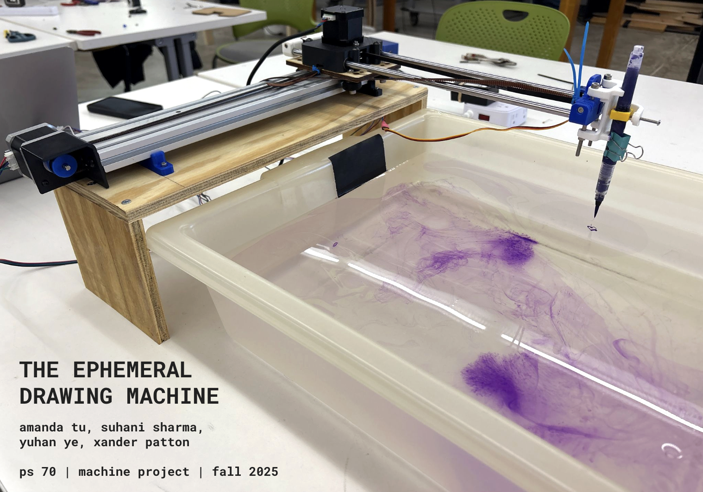
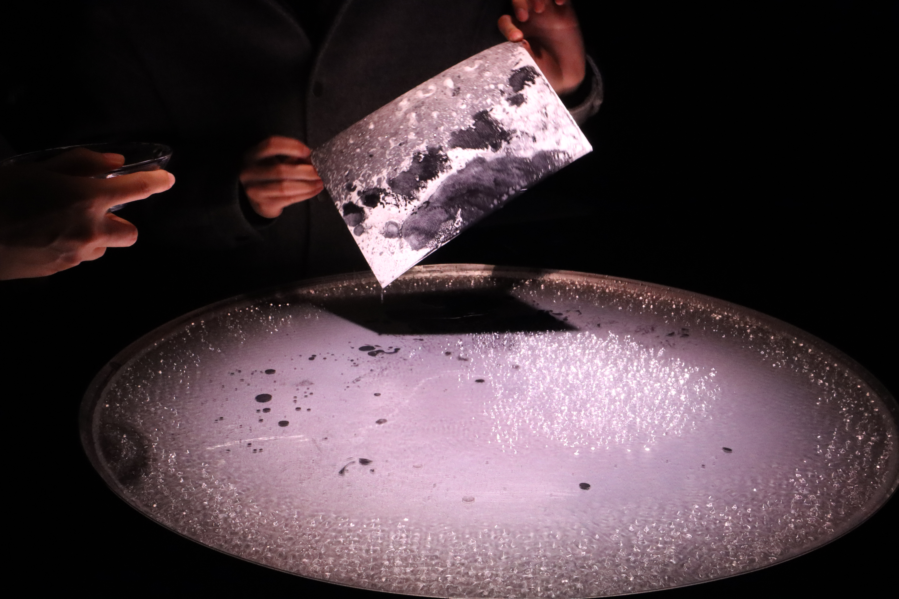
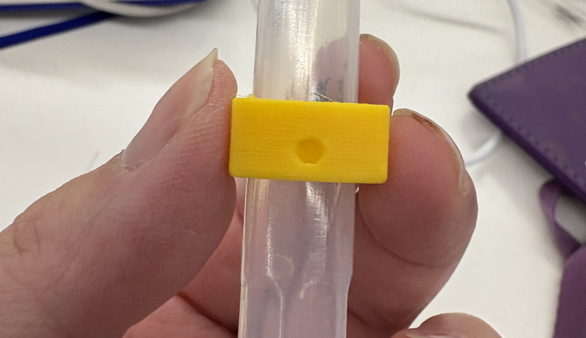
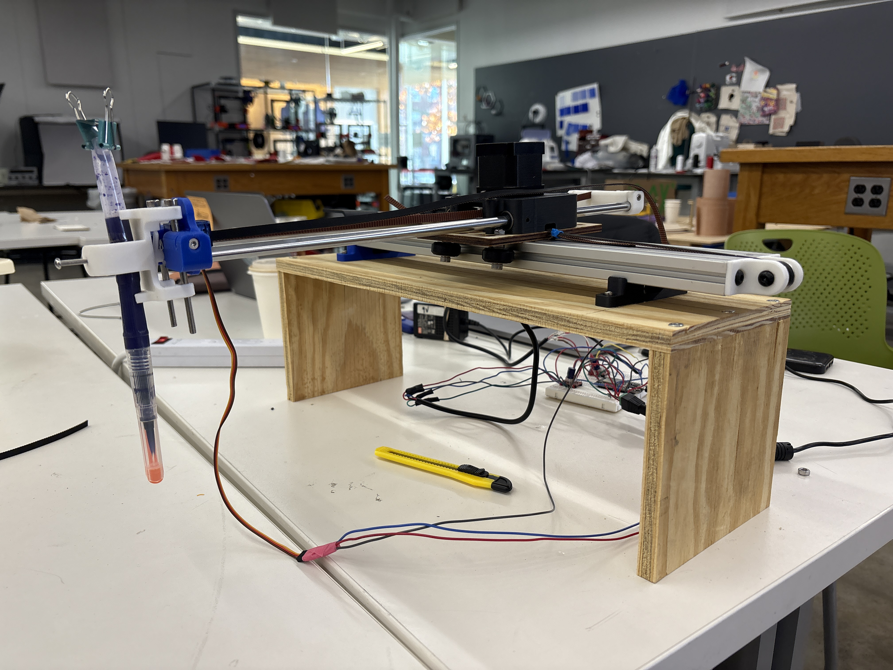
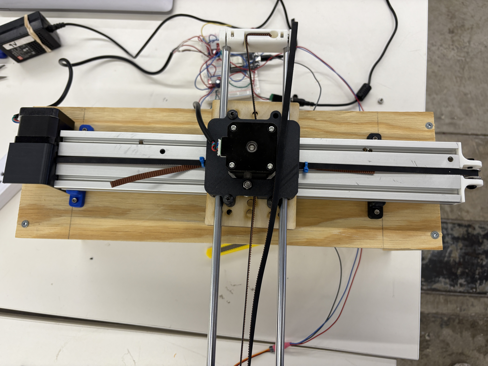
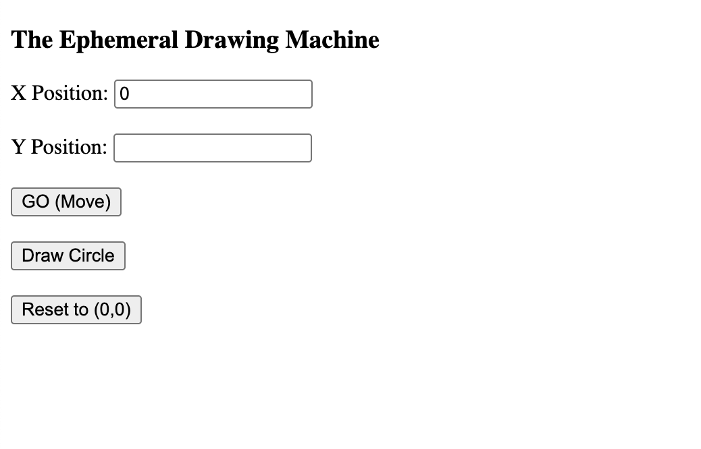
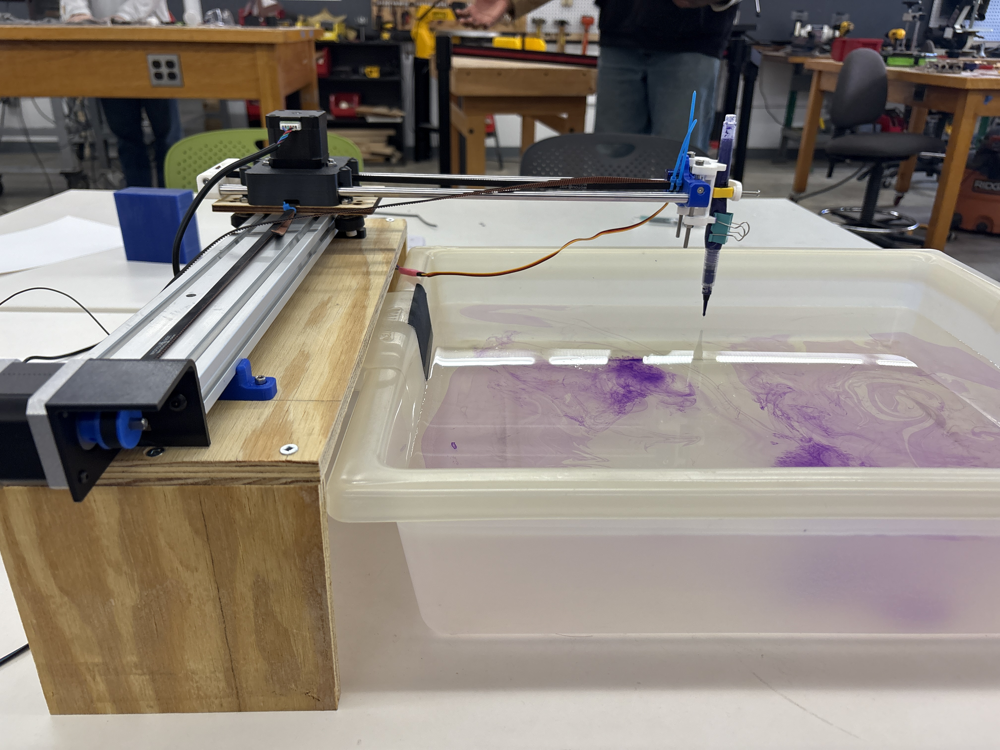
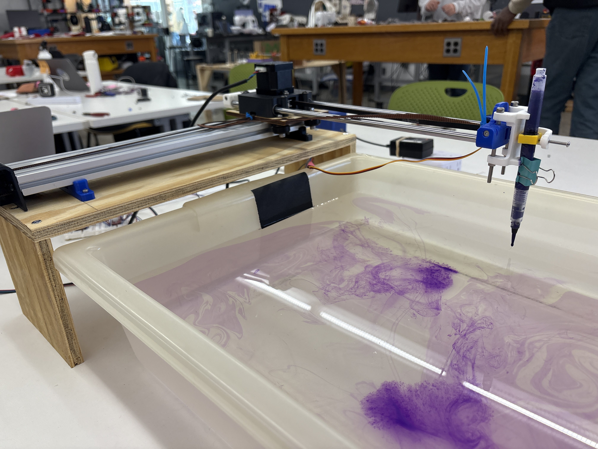
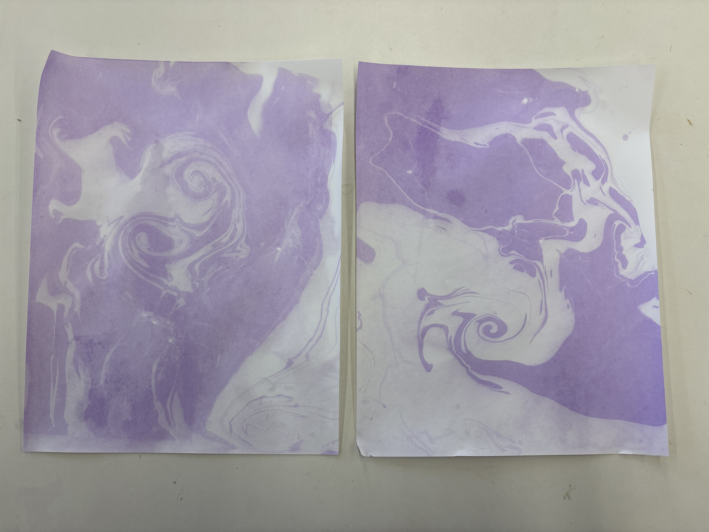

<div class="textcontainer">
<p class="margin"> </p>
<h1>👷🏼♀️ Weeks 10-12: Machine Building 👷</h1>
<br></br>
<p></p>
<br></br>
<p class="p1">Our assignment for this week was to assemble a drawing machine capable of rendering any user-input shape and homing reliably to a consistent origin. We received a starter kit of hardware and code, which we were free to adapt to our needs.</p>
<p class="p1">During our group brainstorm, we explored several concepts&mdash;including Spirograph-like mechanisms&mdash;but ultimately drew inspiration from a water-marbling project Yuhan had developed in her GSD work. That led us to frame the assignment as more of an art installation.</p>
<p></p>
<p style="text-align: center;"><em>Inspiration from Yuhan's awesome water-marbling project!</em></p>
<p class="p1">We created <strong>The Ephemeral Drawing Machine</strong>, designed to dispense ink onto water so that the drawn shape appears briefly before dissolving. We were especially interested in the dual forms produced: the precise, plotted shape created by the machine directly in line with user input, and the secondary marbled pattern that emerges when paper is pressed onto the inked water.</p>
<p class="p1">We divided responsibilities as follows:</p>
<ul class="ul1">
<li><p class="p1"><strong>Assembling the basic hardware kit:</strong> Group effort</li>
<li><p class="p1"><strong>Designing and fabricating the ink-pen end effector:</strong> Amanda</li>
<li><p class="p1"><strong>Designing and fabricating the stand for the drawing rig:</strong> Xander</li>
<li><p class="p1"><strong>Coding and wiring:</strong> Suhani and Yuhan</li>
</ul>
<p class="p1">Designing and fabricating the pen and end effector were relatively straightforward. We purchased a watercolor pen with a built-in reservoir that releases ink when pressed. We then designed and 3D-printed a custom collar that both secures the pen in place and applies downward pressure to dispense the ink consistently.</p>
<p></p>
<p style="text-align: center;"><em>3D-printed watercolor pen collar</em></p>
<p class="p1">For the platform, we built a simple wooden stand and mounted the drawing-machine rig on top of it. This allowed the pen to sit directly above the water reservoir (a basin that Nathan allowed us to borrow from the lab - thank you!) filled with marbling ink. We carefully marked both the reservoir and the pen to calibrate the correct water level and collar height so the pen would rest precisely on the water&rsquo;s surface.</p>
<div style="display: flex; justify-content: center; gap: 20px;">
<p></p>
<p></p>
</div>
<p style="text-align: center;"><em>Assembled hardware + wooden stand</em></p>
<p class="p1">We modified the provided starter code to control the two stepper motors (x-axis motion and y-axis motion of the pen) and the servo motor (z-axis motion of the pen to move down to the surface of the water at the starting coordinate). This is controlled by a websocket interface where the user can specify the desired coodinate to move the pen to, and also draw pre-specified shapes such as a circle.</p>
<p></p>
<p style="text-align: center;"><em>Websocket interface</em></p>
<p class="margin"> </p>
<div class="flexrow">
<a id="btn" href="Drawing Machine Code.zip" download>Drawing Machine Code!
</a>
</div>
<p class="margin"> </p>
<p class="p1">Most challenges arose from assembling the hardware kit and managing the wiring. Notable issues included:</p>
<ul class="ul1">
<li><p class="p1"><strong>Belt slippage:</strong> The belt repeatedly slipped until we flipped it to ensure proper tooth meshing, then applied extremely firm tension (three people pulling) and secured it with two zip ties.</li>
<li><p class="p1"><strong>Wiring:</strong> We encountered many issues when different aspects of the motion didn't work (e.g., the x-axis controlled by the stepper motor, the z-axis controlled by the Servo), and we spent hours troubleshooting, just to realize that the problem was that something wasn't plugged in, some wire had come loose, and/or we needed to switch pairs. </li>
<li><p class="p1"><strong>Ink not dispensing:</strong> The 3D-printed collar held the pen securely but needed constant adjustment to apply enough pressure for ink flow. We ultimately solved this by adding a binder clip to squeeze the pen more consistently.</li>
</ul>
<p>With a lot of help from the teaching team, we were eventually able to debug these issues and get the machine to work!</p>
<div style="text-align: center;">
<video width="480" height="360" controls>
<source src="IMG_8598.mp4" type="video/mp4">
Your browser does not support the video tag.
</video>
</div>
<div style="display: flex; justify-content: center; gap: 20px;">
<p></p>
<p></p>
</div>
<p>The secondary swirl patterns made by placing the paper on the ink in the basin were also really cool.</p>
<p></p>
</div>